ElasticSearch¶
1. 什么是RestFul¶
REST : 表现层状态转化(Representational State Transfer)，如果一个架构符合REST原则，就称它为 RESTful 架构风格。
资源: 所谓"资源"，就是网络上的一个实体，或者说是网络上的一个具体信息
表现层 :我们把"资源"具体呈现出来的形式，叫做它的"表现层"(Representation)。
状态转化(State Transfer):如果客户端想要操作服务器，必须通过某种手段，让服务器端发生"状态转 化"(State Transfer)。而这种转化是建立在表现层之上的，所以就是"表现层状态转化"。
REST原则就是指一个URL代表一个唯一资源，并且通过HTTP协议里面四个动词:GET、POST、PUT、DELETE对应四种服务器端的基本操作: GET用来获取资源，POST用来添加资源(也可以用于更新资源)，PUT用来更新资源，DELETE用来删除资源。
2. 什么是全文检索¶
全文检索是计算机程序通过扫描文章中的每一个词，对每一个词建立一个索引，指明该词在文章中出现的次数和位置。当用户查询时根据建立的索引查找，类似于通过字典的检索字表查字的过程。
检索: 索(建立索引) 检:(检索索引)
全文检索（Full-Text Retrieval(检索)）以文本作为检索对象，找出含有指定词汇的文本。全面、准确和快速是衡量全文检索系统的关键指标。
关于全文检索，我们要知道：
1. 只处理文本。
2. 不处理语义。
3. 搜索时英文不区分大小写。
4. 结果列表有相关度排序。
3. 什么是Elastic Search¶
ElasticSearch 简称 ES ，是基于Apache Lucene构建的开源搜索引擎，是当前流行的企业级搜索引擎。Lucene本身就可以被认为迄今为止性能最好的一款开源搜索引擎工具包，但是lucene的API相对复杂，需要深厚的搜索理论。很难集成到实际的应用中去。但是ES是采用java语言编写，提供了简单易用的RestFul API，开发者可以使用其简单的RestFul API，开发相关的搜索功能，从而避免lucene的复杂性。
4. ES的诞生¶
多年前，一个叫做Shay Banon的刚结婚不久的失业开发者，由于妻子要去伦敦学习厨师，他便跟着也去了。在他找工作的过程中，为了给妻子构建一个食谱的搜索引擎，他开始构建一个早期版本的Lucene。
直接基于Lucene工作会比较困难，所以Shay开始抽象Lucene代码以便Java程序员可以在应用中添加搜索功能。他发布了他的第一个开源项目，叫做“Compass”。
后来Shay找到一份工作，这份工作处在高性能和内存数据网格的分布式环境中，因此高性能的、实时的、分布式的搜索引擎也是理所当然需要的。然后他决定重写Compass库使其成为一个独立的服务叫做Elasticsearch。
第一个公开版本出现在2010年2月，在那之后Elasticsearch已经成为Github上最受欢迎的项目之一，代码贡献者超过300人。一家主营Elasticsearch的公司就此成立，他们一边提供商业支持一边开发新功能，不过Elasticsearch将永远开源且对所有人可用。
Shay的妻子依旧等待着她的食谱搜索……
5. ES的应用场景¶
ES主要以轻量级JSON作为数据存储格式，这点与MongoDB有点类似，但它在读写性能上优于 MongoDB 。同时也支持地理位置查询 ，还方便地理位置和文本混合查询 。 以及在统计、日志类数据存储和分析、可视化这方面是引领者。
- 国外:
Wikipedia(维基百科)使用ES提供全文搜索并高亮关键字、StackOverflow(IT问答网站)结合全文搜索与地理位置查询、**Github**使用Elasticsearch检索1300亿行的代码。
- 国内:
百度(在云分析、网盟、预测、文库、钱包、风控等业务上都应用了ES，单集群每天导入30TB+数据， 总共每天60TB+)、**新浪 、阿里巴巴、腾讯**等公司均有对ES的使用。
使用比较广泛的平台ELK(ElasticSearch, Logstash, Kibana)。
6. ES的安装¶
6.1 准备环境¶
# 0.安装前准备
- centos7 +
- java 8 +
- elastic 6.8.0+
# 1.在官方网站下载ES
- wget http://artifacts.elastic.co/downloads/elasticsearch/elasticsearch-6.8.0.tar.gz
# 2.安装JDK(必须JDK1.8+)
- rpm -ivh jdk-8u181-linux-x64.rpm
/*注意:默认安装位置 /usr/java/jdk1.8.0_171-amd64*/
# 3.配置环境变量
- vim /etc/profile
在文件末尾加入:
export JAVA_HOME=/usr/java/jdk1.8.0_171-amd64
export PATH=$PATH:$JAVA_HOME/bin
# 4.重载系统配置
- source /etc/profile
6.2 安装ES服务¶
# 1. ES不能以root用户身份启动必须创建普通用户
- a.在linux系统中创建新的组
groupadd es
- b.创建新的用户es并将es用户放入es组中
useradd es -g es
- c.修改es用户密码
passwd es
# 2.使用普通用户登录并上传安装包
# 3.解压缩elasticsearch - tar -zxvf elasticsearch-6.4.1.tar.gz
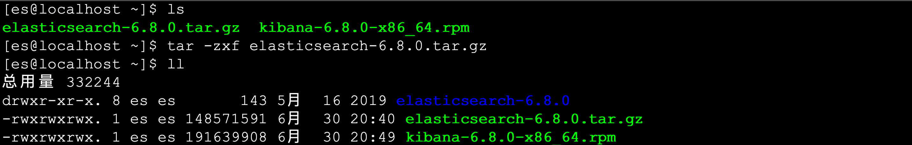
# 4.进入ES安装目录查看目录结构 - bin 可执行的二进制文件的目录 - config 配置文件的目录 - lib 运行时依赖的库 - logs 运行时日志文件 - modules 运行时依赖的模块 - plugins 可以安装官方以及第三方插件
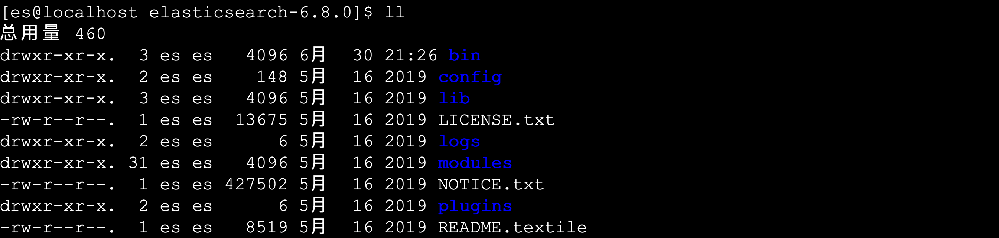
# 5.进入bin目录中启动ES服务 - ./elasticsearch - 出现下图红色日志说明启动成功:
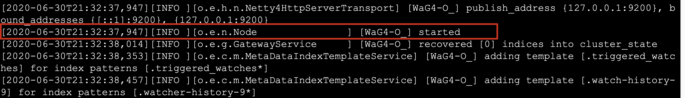
# 6.执行如下命令测试客户端操作 - curl http://localhost:9200
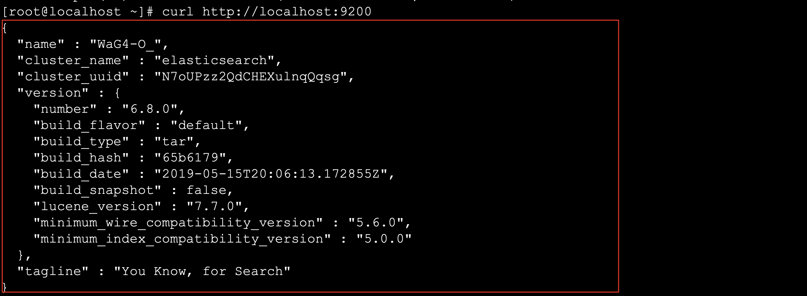
6.3 开启远程连接权限¶
注意:ES服务默认启动是受保护的,只允许本地客户端连接,如果想要通过远程客户端访问,必须开启远程连接
# 1.开启ES远程访问
- vim elasticsearch.yml 将原来network修改为以下配置:
network.host: 0.0.0.0
- 原始配置
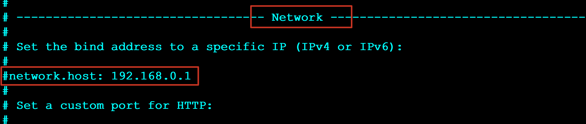
- 修改后配置
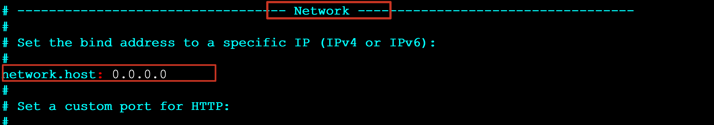
# 2.重启启动ES服务 - [es@localhost bin]$ ./elasticsearch
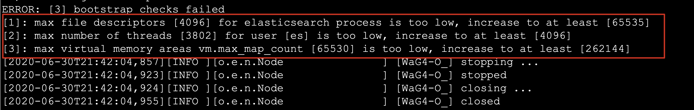
# 3.重新启动es出现如下错误
- ERROR: [3] bootstrap checks failed
[1]: max file descriptors [4096] for elasticsearch process is too low, increase to at least [65535]
[2]: max number of threads [3802] for user [es] is too low, increase to at least [4096]
[3]: max virtual memory areas vm.max_map_count [65530] is too low, increase to at least [262144]
# 4.解决错误[1] 使用root用户修改系统配置
- vim /etc/security/limits.conf 在最后面追加下面内容
* soft nofile 65536
* hard nofile 65536
* soft nproc 4096
* hard nproc 4096
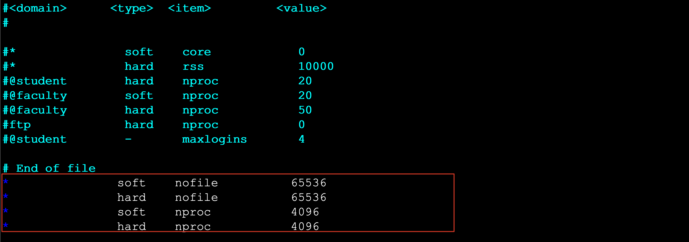
# 5.登录重新在检测配置是否生效
- ulimit -Hn
ulimit -Sn
ulimit -Hu
ulimit -Su
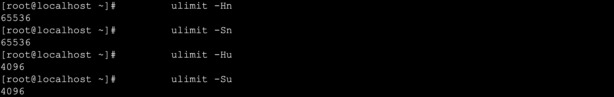
# 6.解决错误[2] 使用root用户修改系统配置
- vim /etc/security/limits.d/20-nproc.conf
启动ES用户名 soft nproc 4096
# 7.解决错误[3] 使用root用户修改系统配置
- vim /etc/sysctl.conf
vm.max_map_count=655360
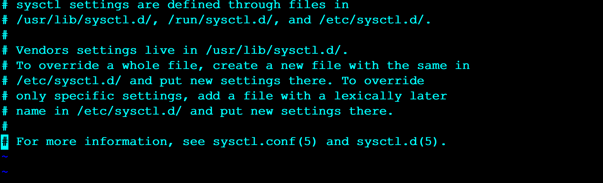
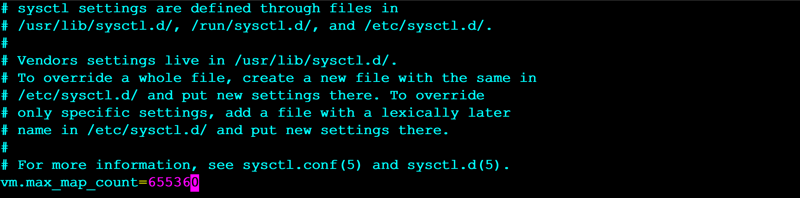
# 8.执行如下命令检测是否生效 - sysctl -p
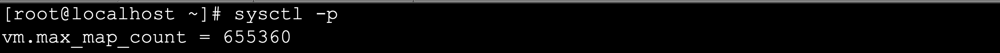
# 9.退出从新登录之后重新启动ES服务 - [es@localhost bin]$ ./elasticsearch
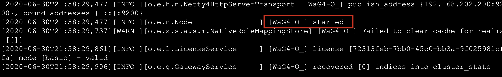
# 10.通过浏览器访问ES服务 - http://192.168.102.200:9200
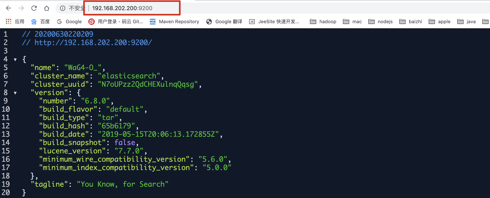
7. ES中基本概念¶
7.1 接近实时(NRT Near Real Time )¶
Elasticsearch是一个接近实时的搜索平台。这意味着，从索引一个文档直到这个文档能够被搜索到有一个轻微的延迟(通常是1秒内)
7.2 索引(index)¶
一个索引就是一个拥有几分相似特征的文档的集合。比如说，你可以有一个客户数据的索引，另一个产品目录的索引，还有一个订单数据的索引。一个索引由一个名字来标识(必须全部是小写字母的)，并且当我们要对这个索引中的文档进行索引、搜索、更新和删除的时候，都要使用到这个名字。索引类似于关系型数据库中Database 的概念。在一个集群中，如果你想，可以定义任意多的索引。
7.3 类型(type)¶
在一个索引中，你可以定义一种或多种类型。一个类型是你的索引的一个逻辑上的分类/分区，其语义完全由你来定。通常，会为具有一组共同字段的文档定义一个类型。比如说，我们假设你运营一个博客平台并且将你所有的数 据存储到一个索引中。在这个索引中，你可以为用户数据定义一个类型，为博客数据定义另一个类型，当然，也可 以为评论数据定义另一个类型。类型类似于关系型数据库中Table的概念。
NOTE: 在5.x版本以前可以在一个索引中定义多个类型,6.x之后版本也可以使用,但是不推荐,在7~8.x版本中彻底移除一个索引中创建多个类型
7.4 映射(Mapping)¶
Mapping**是ES中的一个很重要的内容，**它类似于传统关系型数据中table的schema，用于定义一个索引(index)中的类型(type)的数据的结构。 在ES中，我们可以手动创建type(相当于table)和mapping(相关与schema),也可以采用默认创建方式。在默认配置下，ES可以根据插入的数据自动地创建type及其mapping。 mapping中主要包括字段名、字段数据类型和字段索引类型
7.5 文档(document)¶
**一个文档是一个可被索引的基础信息单元，类似于表中的一条记录。**比如，你可以拥有某一个员工的文档,也可以拥有某个商品的一个文档。文档以采用了轻量级的数据交换格式JSON(Javascript Object Notation)来表示。
7.6 概念关系图¶
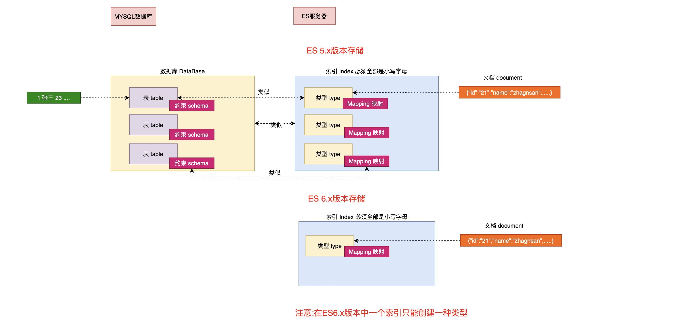
8. Kibana的安装¶
Kibana是一个针对Elasticsearch的开源分析及可视化平台，使用Kibana可以查询、查看并与存储在ES索引的数据进行交互操作，使用Kibana能执行高级的数据分析，并能以图表、表格和地图的形式查看数据。
# 1.下载Kibana - https://www.elastic.co/downloads/kibana # 2. 安装下载的kibana - rpm -ivh kibana-6.2.4-x86_64.rpm # 3. 查找kibana的安装位置 - find / -name kibana # 4. 编辑kibana配置文件 - [root@localhost /]# vim /etc/kibana/kibana.yml # 5. 修改如下配置 - server.host: "192.168.202.200" #ES服务器主机地址 - elasticsearch.hosts: ["http://192.168.202.200:9200"] #ES服务器地址
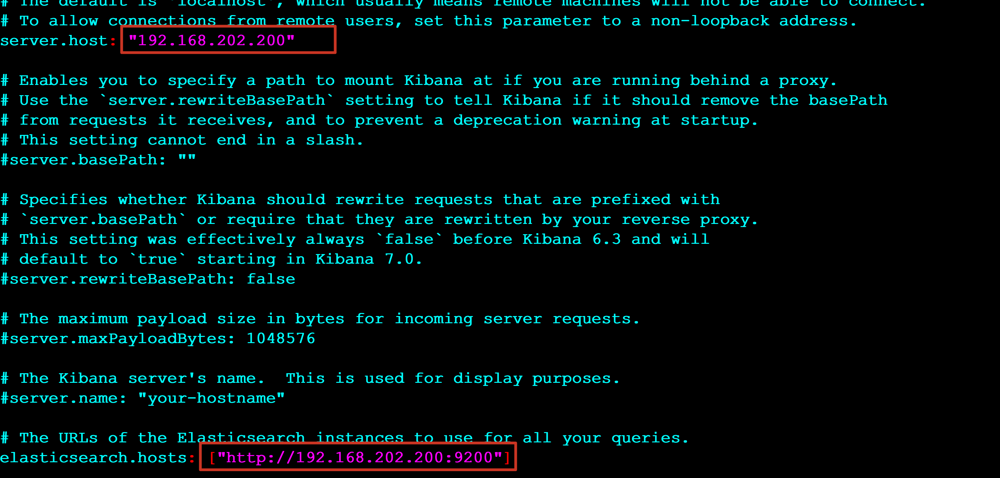
# 6. 启动kibana
- systemctl start kibana
systemctl stop kibana
systemctl status kibana
# 7. 访问kibana的web界面
- http://10.102.115.3:5601/ #kibana默认端口为5601 使用主机:端口直接访问即可
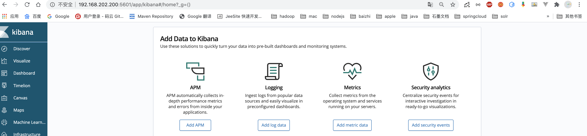
9. Kibana的基本操作¶
9.1 索引(Index)的基本操作¶
PUT /dangdang/ 创建索引 DELETE /dangdang 删除索引 DELETE /* 删除所有索引 GET /_cat/indices?v 查看索引信息
9.2 类型(type)的基本操作¶
创建类型¶
1.创建/dangdang索引并创建(product)类型 PUT /dangdang { "mappings": { "product": { "properties": { "title": { "type": "text" }, "name": { "type": "text" }, "age": { "type": "integer" }, "created": { "type": "date" } } } } } 注意: 这种方式创建类型要求索引不能存在
Mapping Type: : text , keyword , date ,integer, long , double , boolean or ip
查看类型¶
GET /dangdang/_mapping/product # 语法:GET /索引名/_mapping/类型名
9.3 文档(document)的基本操作¶
添加文档¶
PUT /ems/emp/1 #/索引/类型/id { "name":"赵小六", "age":23, "bir":"2012-12-12", "content":"这是一个好一点的员工" }
查询文档¶
GET /ems/emp/1 返回结果: { "_index": "ems", "_type": "emp", "_id": "1", "_version": 1, "found": true, "_source": { "name": "赵小六", "age": 23, "bir": "2012-12-12", "content": "这是一个好一点的员工" } }
删除文档¶
DELETE /ems/emp/1 { "_index": "ems", "_type": "emp", "_id": "1", "_version": 2, "result": "deleted", #删除成功 "_shards": { "total": 2, "successful": 1, "failed": 0 }, "_seq_no": 1, "_primary_term": 1 }
更新文档¶
1.第一种方式 更新原有的数据 POST /dangdang/emp/1/_update { "doc":{ "name":"xiaohei" } } 2.第二种方式 添加新的数据 POST /ems/emp/1/_update { "doc":{ "name":"xiaohei", "age":11, "dpet":"你好部门" } } 3.第三种方式 在原来数据基础上更新 POST /ems/emp/1/_update { "script": "ctx._source.age += 5" }
ES的使用语法风格为: <REST Verb> /<Index>/<Type>/<ID> REST操作 /索引/类型/文档id
批量操作¶
1. 批量索引两个文档 PUT /dangdang/emp/_bulk {"index":{"_id":"1"}} {"name": "John Doe","age":23,"bir":"2012-12-12"} {"index":{"_id":"2"}} {"name": "Jane Doe","age":23,"bir":"2012-12-12"} 2. 更新文档同时删除文档 POST /dangdang/emp/_bulk {"update":{"_id":"1"}} {"doc":{"name":"lisi"}} {"delete":{"_id":2}} {"index":{}} {"name":"xxx","age":23} 注意:批量时不会因为一个失败而全部失败,二十继续执行后续操作,批量在返回时按照执行的状态开始返回
10. ES中高级检索(Query)¶
10.1 检索方式 _search¶
ES官方提供了两中检索方式:一种是通过 URL 参数进行搜索,另一种是通过 DSL(Domain Specified Language) 进行搜索。官方更推荐使用第二种方式第二种方式是基于传递JSON作为请求体(request body)格式与ES进行交互，这种方式更强大，更简洁。
- 使用语法
URL查询: GET /索引/类型/_search?参数
DSL查询: GET /索引/类型/_search {}
10.2 测试数据¶
1.删除索引 DELETE /ems 2.创建索引并指定类型 PUT /ems { "mappings":{ "emp":{ "properties":{ "name":{ "type":"text" }, "age":{ "type":"integer" }, "bir":{ "type":"date" }, "content":{ "type":"text" }, "address":{ "type":"keyword" } } } } } 3.插入测试数据 PUT /ems/emp/_bulk {"index":{}} {"name":"小黑","age":23,"bir":"2012-12-12","content":"为开发团队选择一款优秀的MVC框架是件难事儿，在众多可行的方案中决择需要很高的经验和水平","address":"北京"} {"index":{}} {"name":"王小黑","age":24,"bir":"2012-12-12","content":"Spring 框架是一个分层架构，由 7 个定义良好的模块组成。Spring 模块构建在核心容器之上，核心容器定义了创建、配置和管理 bean 的方式","address":"上海"} {"index":{}} {"name":"张小五","age":8,"bir":"2012-12-12","content":"Spring Cloud 作为Java 语言的微服务框架，它依赖于Spring Boot，有快速开发、持续交付和容易部署等特点。Spring Cloud 的组件非常多，涉及微服务的方方面面，井在开源社区Spring 和Netflix 、Pivotal 两大公司的推动下越来越完善","address":"无锡"} {"index":{}} {"name":"win7","age":9,"bir":"2012-12-12","content":"Spring的目标是致力于全方位的简化Java开发。 这势必引出更多的解释， Spring是如何简化Java开发的？","address":"南京"} {"index":{}} {"name":"梅超风","age":43,"bir":"2012-12-12","content":"Redis是一个开源的使用ANSI C语言编写、支持网络、可基于内存亦可持久化的日志型、Key-Value数据库，并提供多种语言的API","address":"杭州"} {"index":{}} {"name":"张无忌","age":59,"bir":"2012-12-12","content":"ElasticSearch是一个基于Lucene的搜索服务器。它提供了一个分布式多用户能力的全文搜索引擎，基于RESTful web接口","address":"北京"}
10.2 URL检索¶
**GET /ems/emp/_search?q=&sort=age:asc*
_search 搜索的API q=* 匹配所有文档 sort 以结果中的指定字段排序
GET /ems/emp/_search?q=*&sort=age:desc&size=5&from=0&_source=name,age,bir
10.3 DSL检索¶
NOTE: 以下重点讲解DSL语法
GET /ems/emp/_search { "query": {"match_all": {}}, "sort": [ { "age": { "order": "desc" } } ] }
10.4 DSL高级检索(Query)¶
0. 查询所有(match_all)¶
match_all关键字: 返回索引中的全部文档
GET /ems/emp/_search { "query": { "match_all": {} } }
1. 查询结果中返回指定条数(size)¶
size 关键字: 指定查询结果中返回指定条数。 默认返回值10条
GET /ems/emp/_search { "query": { "match_all": {} }, "size": 1 }
2. 分页查询(from)¶
from 关键字: 用来指定起始返回位置，和**size关键字连用可实现分页效果**
GET /ems/emp/_search { "query": {"match_all": {}}, "sort": [ { "age": { "order": "desc" } } ], "size": 2, "from": 1 }
3. 查询结果中返回指定字段(_source)¶
_source 关键字: 是一个数组,在数组中用来指定展示那些字段
GET /ems/emp/_search { "query": { "match_all": {} }, "_source": ["account_number", "balance"] }
4. 关键词查询(term)¶
term 关键字: 用来使用关键词查询
GET /ems/emp/_search { "query": { "term": { "address": { "value": "北京" } } } }
NOTE1: 通过使用term查询得知ES中默认使用分词器为标准分词器(StandardAnalyzer),标准分词器对于英文单词分词,对于中文单字分词。
NOTE2: 通过使用term查询得知,在ES的Mapping Type 中 keyword , date ,integer, long , double , boolean or ip 这些类型不分词，只有text类型分词。
5. 范围查询(range)¶
range 关键字: 用来指定查询指定范围内的文档
GET /ems/emp/_search { "query": { "range": { "age": { "gte": 8, "lte": 30 } } } }
6. 前缀查询(prefix)¶
prefix 关键字: 用来检索含有指定前缀的关键词的相关文档
GET /ems/emp/_search { "query": { "prefix": { "content": { "value": "redis" } } } }
7. 通配符查询(wildcard)¶
wildcard 关键字: 通配符查询 ? 用来匹配一个任意字符 * 用来匹配多个任意字符
GET /ems/emp/_search { "query": { "wildcard": { "content": { "value": "re*" } } } }
8. 多id查询(ids)¶
ids 关键字 : 值为数组类型,用来根据一组id获取多个对应的文档
GET /ems/emp/_search { "query": { "ids": { "values": ["lg5HwWkBxH7z6xax7W3_","lQ5HwWkBxH7z6xax7W3_"] } } }
9. 模糊查询(fuzzy)¶
fuzzy 关键字: 用来模糊查询含有指定关键字的文档
GET /ems/emp/_search { "query": { "fuzzy": { "content":"spring" } } } fuzzy 模糊查询 最大模糊错误 必须在0-2之间 # 搜索关键词长度为 2 不允许存在模糊 0 # 搜索关键词长度为3-5 允许一次模糊 0 1 # 搜索关键词长度大于5 允许最大2模糊
10. 布尔查询(bool)¶
bool 关键字: 用来组合多个条件实现复杂查询
must: 相当于&& 同时成立
should: 相当于|| 成立一个就行
must_not: 相当于! 不能满足任何一个
GET /ems/emp/_search { "query": { "bool": { "must": [ { "range": { "age": { "gte": 0, "lte": 30 } } } ], "must_not": [ {"wildcard": { "content": { "value": "redi?" } }} ] } }, "sort": [ { "age": { "order": "desc" } } ] }
11. 高亮查询(highlight)¶
highlight 关键字: 可以让符合条件的文档中的关键词高亮
GET /ems/emp/_search { "query": { "term": { "content": { "value": "redis" } } }, "highlight": { "fields": { "*": {} } } }
自定义高亮html标签: 可以在highlight中使用
pre_tags和post_tags
GET /ems/emp/_search { "query":{ "term":{ "content":"框架" } }, "highlight": { "pre_tags": ["<span style='color:red'>"], "post_tags": ["</span>"], "fields": { "*":{} } } }
多字段高亮 使用
require_field_match开启多个字段高亮
GET /ems/emp/_search { "query":{ "term":{ "content":"框架" } }, "highlight": { "pre_tags": ["<span style='color:red'>"], "post_tags": ["</span>"], "require_field_match":false, "fields": { "*":{} } } }
12. 多字段查询(multi_match)¶
GET /ems/emp/_search { "query": { "multi_match": { "query": "中国", "fields": ["name","content"] #这里写要检索的指定字段 } } }
13. 多字段分词查询(query_string)¶
GET /dangdang/book/_search { "query": { "query_string": { "query": "中国声音", "analyzer": "ik_max_word", "fields": ["name","content"] } } }
11. IK分词器¶
NOTE: 默认ES中采用标准分词器进行分词,这种方式并不适用于中文网站,因此需要修改ES对中文友好分词,从而达到更佳的搜索的效果。
11.1 在线安装IK¶
在线安装IK (v5.5.1版本后开始支持在线安装 )
# 0.必须将es服务中原始数据删除
- 进入es安装目录中将data目录数据删除
rm -rf data
# 1. 在es安装目录中执行如下命令
[es@linux elasticsearch-6.2.4]$ ./bin/elasticsearch-plugin install https://github.com/medcl/elasticsearch-analysis-ik/releases/download/v6.8.0/elasticsearch-analysis-ik-6.8.0.zip
-> Downloading https://github.com/medcl/elasticsearch-analysis-ik/releases/download/v6.2.4/elasticsearch-analysis-ik-6.2.4.zip
[=================================================] 100%
-> Installed analysis-ik
[es@linux elasticsearch-6.2.4]$ ls plugins/
analysis-ik
[es@linux elasticsearch-6.2.4]$ cd plugins/analysis-ik/
[es@linux analysis-ik]$ ls
commons-codec-1.9.jar elasticsearch-analysis-ik-6.2.4.jar httpcore-4.4.4.jar
commons-logging-1.2.jar httpclient-4.5.2.jar plugin-descriptor.properties
# 2. 重启es生效
# 3.测试ik安装成功
GET /_analyze
{
"text": "中华人民共和国国歌",
"analyzer": "ik_smart"
}
# 4.在线安装IK配置文件
- es安装目录中config目录analysis-ik/IKAnalyzer.cfg.xml
NOTE: 要求版本严格与当前使用版本一致,如需使用其他版本替换
6.2.4为使用的版本号
11.2 本地安装IK¶
可以将对应的IK分词器下载到本地,然后再安装 NOTE: 本课程使用本地安装
# 1. 下载对应版本
- [es@linux ~]$ wget https://github.com/medcl/elasticsearch-analysis-ik/releases/download/v6.2.4/elasticsearch-analysis-ik-6.2.4.zip
# 2. 解压
- [es@linux ~]$ unzip elasticsearch-analysis-ik-6.2.4.zip #先使用yum install -y unzip
# 3. 移动到es安装目录的plugins目录中
- [es@linux ~]$ ls elasticsearch-6.2.4/plugins/
[es@linux ~]$ mv elasticsearch elasticsearch-6.2.4/plugins/
[es@linux ~]$ ls elasticsearch-6.2.4/plugins/
elasticsearch
[es@linux ~]$ ls elasticsearch-6.2.4/plugins/elasticsearch/
commons-codec-1.9.jar config httpclient-4.5.2.jar plugin-descriptor.properties
commons-logging-1.2.jar elasticsearch-analysis-ik-6.2.4.jar httpcore-4.4.4.jar
# 4. 重启es生效
# 5. 本地安装ik配置目录为
- es安装目录中/plugins/analysis-ik/config/IKAnalyzer.cfg.xml
11.3 测试IK分词器¶
NOTE: IK分词器提供了两种mapping类型用来做文档的分词分别是
ik_max_word和ik_smart
ik_max_word 和 ik_smart 什么区别?
ik_max_word: 会将文本做最细粒度的拆分，比如会将“中华人民共和国国歌”拆分为“中华人民共和国,中华人民,中华,华人,人民共和国,人民,人,民,共和国,共和,和,国国,国歌”，会穷尽各种可能的组合；
ik_smart: 会做最粗粒度的拆分，比如会将“中华人民共和国国歌”拆分为“中华人民共和国,国歌”。
测试数据¶
DELETE /ems PUT /ems { "mappings":{ "emp":{ "properties":{ "name":{ "type":"text", "analyzer": "ik_max_word", "search_analyzer": "ik_max_word" }, "age":{ "type":"integer" }, "bir":{ "type":"date" }, "content":{ "type":"text", "analyzer": "ik_max_word", "search_analyzer": "ik_max_word" }, "address":{ "type":"keyword" } } } } } PUT /ems/emp/_bulk {"index":{}} {"name":"小黑","age":23,"bir":"2012-12-12","content":"为开发团队选择一款优秀的MVC框架是件难事儿，在众多可行的方案中决择需要很高的经验和水平","address":"北京"} {"index":{}} {"name":"王小黑","age":24,"bir":"2012-12-12","content":"Spring 框架是一个分层架构，由 7 个定义良好的模块组成。Spring 模块构建在核心容器之上，核心容器定义了创建、配置和管理 bean 的方式","address":"上海"} {"index":{}} {"name":"张小五","age":8,"bir":"2012-12-12","content":"Spring Cloud 作为Java 语言的微服务框架，它依赖于Spring Boot，有快速开发、持续交付和容易部署等特点。Spring Cloud 的组件非常多，涉及微服务的方方面面，井在开源社区Spring 和Netflix 、Pivotal 两大公司的推动下越来越完善","address":"无锡"} {"index":{}} {"name":"win7","age":9,"bir":"2012-12-12","content":"Spring的目标是致力于全方位的简化Java开发。 这势必引出更多的解释， Spring是如何简化Java开发的？","address":"南京"} {"index":{}} {"name":"梅超风","age":43,"bir":"2012-12-12","content":"Redis是一个开源的使用ANSI C语言编写、支持网络、可基于内存亦可持久化的日志型、Key-Value数据库，并提供多种语言的API","address":"杭州"} {"index":{}} {"name":"张无忌","age":59,"bir":"2012-12-12","content":"ElasticSearch是一个基于Lucene的搜索服务器。它提供了一个分布式多用户能力的全文搜索引擎，基于RESTful web接口","address":"北京"} GET /ems/emp/_search { "query":{ "term":{ "content":"框架" } }, "highlight": { "pre_tags": ["<span style='color:red'>"], "post_tags": ["</span>"], "fields": { "*":{} } } }
11.4 配置扩展词¶
IK支持自定义
扩展词典和停用词典,所谓**扩展词典就是有些词并不是关键词,但是也希望被ES用来作为检索的关键词,可以将这些词加入扩展词典。停用词典**就是有些词是关键词,但是出于业务场景不想使用这些关键词被检索到，可以将这些词放入停用词典。如何定义扩展词典和停用词典可以修改IK分词器中
config目录中IKAnalyzer.cfg.xml这个文件。NOTE：词典的编码必须为UTF-8，否则无法生效
1. 修改vim IKAnalyzer.cfg.xml
<?xml version="1.0" encoding="UTF-8"?>
<!DOCTYPE properties SYSTEM "http://java.sun.com/dtd/properties.dtd">
<properties>
<comment>IK Analyzer 扩展配置</comment>
<!--用户可以在这里配置自己的扩展字典 -->
<entry key="ext_dict">ext_dict.dic</entry>
<!--用户可以在这里配置自己的扩展停止词字典-->
<entry key="ext_stopwords">ext_stopword.dic</entry>
</properties>
2. 在ik分词器目录下config目录中创建ext_dict.dic文件 编码一定要为UTF-8才能生效
vim ext_dict.dic 加入扩展词即可
3. 在ik分词器目录下config目录中创建ext_stopword.dic文件
vim ext_stopword.dic 加入停用词即可
4.重启es生效
12. (过滤查询) Filter Query¶
12.1 过滤查询¶
其实准确来说，ES中的查询操作分为2种:
查询(query)和过滤(filter)。查询即是之前提到的query查询，它 (查询)默认会计算每个返回文档的得分，然后根据得分排序。而过滤(filter)只会筛选出符合的文档，并不计算 得分，且它可以缓存文档 。所以，单从性能考虑，过滤比查询更快。换句话说，过滤适合在大范围筛选数据，而查询则适合精确匹配数据。一般应用时， 应先使用过滤操作过滤数据， 然后使用查询匹配数据。
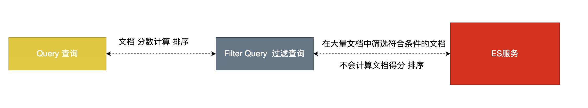
12.2 过滤语法¶
GET /ems/emp/_search { "query": { "bool": { "must": [ {"match_all": {}} ], "filter": { "range": { "age": { "gte": 10 } } } } } }
NOTE: 在执行filter和query时,先执行filter在执行query
NOTE:Elasticsearch会自动缓存经常使用的过滤器，以加快性能。
12.3 常见的过滤器类型¶
term 、 terms Filter¶
GET /ems/emp/_search # 使用term过滤 { "query": { "bool": { "must": [ {"term": { "name": { "value": "小黑" } }} ], "filter": { "term": { "content":"框架" } } } } } GET /dangdang/book/_search #使用terms过滤 { "query": { "bool": { "must": [ {"term": { "name": { "value": "中国" } }} ], "filter": { "terms": { "content":[ "科技", "声音" ] } } } } }
ranage filter¶
GET /ems/emp/_search { "query": { "bool": { "must": [ {"term": { "name": { "value": "中国" } }} ], "filter": { "range": { "age": { "gte": 7, "lte": 20 } } } } } }
exists filter¶
过滤存在指定字段,获取字段不为空的索引记录使用
GET /ems/emp/_search { "query": { "bool": { "must": [ {"term": { "name": { "value": "中国" } }} ], "filter": { "exists": { "field":"aaa" } } } } }
ids filter¶
过滤含有指定字段的索引记录
GET /ems/emp/_search { "query": { "bool": { "must": [ {"term": { "name": { "value": "中国" } }} ], "filter": { "ids": { "values": ["1","2","3"] } } } } }
13. Java操作ES¶
13.1 引入maven依赖¶
<dependency> <groupId>org.elasticsearch</groupId> <artifactId>elasticsearch</artifactId> <version>6.8.0</version> </dependency> <dependency> <groupId>org.elasticsearch.client</groupId> <artifactId>transport</artifactId> <version>6.8.0</version> </dependency> <dependency> <groupId>org.elasticsearch.plugin</groupId> <artifactId>transport-netty4-client</artifactId> <version>6.8.0</version> </dependency>
13.2创建索引和类型¶
Rest的创建方式¶
// 1.在restful的创建方式 PUT /dangdang { "mappings": { "book":{ "properties": { "name":{ "type":"text", "analyzer": "ik_max_word" }, "age":{ "type":"integer" }, "sex":{ "type":"keyword" }, "content":{ "type":"text", "analyzer": "ik_max_word" } } } } }
0. 创建客户端操作对象¶
//创建ES客户端操作对象 @Test public void init() throws UnknownHostException { PreBuiltTransportClient preBuiltTransportClient = new PreBuiltTransportClient(Settings.EMPTY); preBuiltTransportClient.addTransportAddress(new TransportAddress( InetAddress.getByName("192.168.202.200"),9300)); }
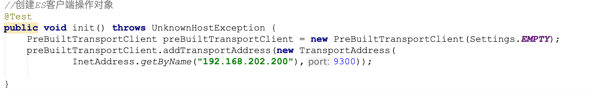
1. 创建索引¶
//创建索引 @Test public void createIndex() throws UnknownHostException, ExecutionException, InterruptedException { PreBuiltTransportClient preBuiltTransportClient = new PreBuiltTransportClient(Settings.EMPTY); preBuiltTransportClient.addTransportAddress(new TransportAddress( InetAddress.getByName("192.168.202.200"),9300)); //定义索引请求 CreateIndexRequest ems = new CreateIndexRequest("ems"); //执行索引创建 CreateIndexResponse createIndexResponse = preBuiltTransportClient.admin().indices().create(ems).get(); System.out.println(createIndexResponse.isAcknowledged()); }
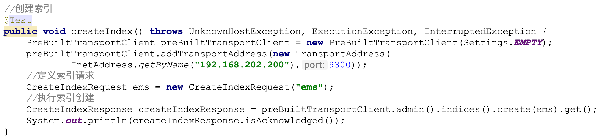
2. 删除索引¶
//删除索引 @Test public void deleteIndex() throws UnknownHostException, ExecutionException, InterruptedException { PreBuiltTransportClient preBuiltTransportClient = new PreBuiltTransportClient(Settings.EMPTY); preBuiltTransportClient.addTransportAddress(new TransportAddress( InetAddress.getByName("192.168.202.200"),9300)); //定义索引请求 DeleteIndexRequest ems = new DeleteIndexRequest("ems"); //执行索引删除 AcknowledgedResponse acknowledgedResponse = preBuiltTransportClient.admin().indices().delete(ems).get(); System.out.println(acknowledgedResponse.isAcknowledged()); }
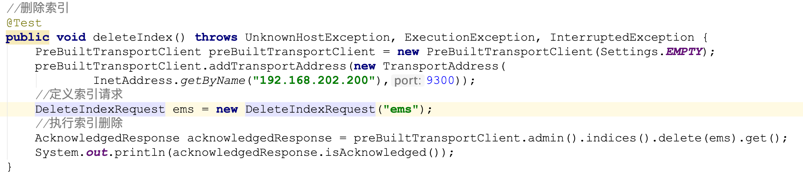
3 .创建索引和类型¶
//创建索引类型和映射 @Test public void init() throws UnknownHostException, ExecutionException, InterruptedException { PreBuiltTransportClient preBuiltTransportClient = new PreBuiltTransportClient(Settings.EMPTY); preBuiltTransportClient.addTransportAddress(new TransportAddress( InetAddress.getByName("192.168.202.200"),9300)); //创建索引 CreateIndexRequest ems = new CreateIndexRequest("ems"); //定义json格式映射 String json = "{\"properties\":{\"name\":{\"type\":\"text\",\"analyzer\":\"ik_max_word\"},\"age\":{\"type\":\"integer\"},\"sex\":{\"type\":\"keyword\"},\"content\":{\"type\":\"text\",\"analyzer\":\"ik_max_word\"}}}"; //设置类型和mapping ems.mapping("emp",json, XContentType.JSON); //执行创建 CreateIndexResponse createIndexResponse = preBuiltTransportClient.admin().indices().create(ems).get(); System.out.println(createIndexResponse.isAcknowledged()); }
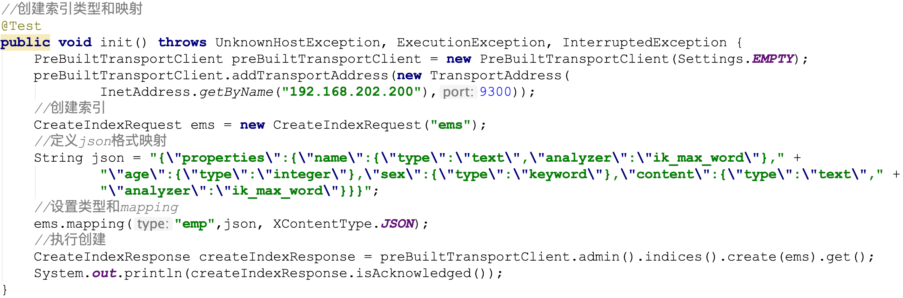
13.3 索引一条记录¶
1.指定id索引记录¶
//索引一条文档 指定id @Test public void createIndexOptionId() throws JsonProcessingException { Emp emp = new Emp("小陈", 23, "男", "这是一个单纯的少年,单纯的我!"); String s = JSONObject.toJSONString(emp); IndexResponse indexResponse = transportClient.prepareIndex("ems", "emp", "1").setSource(s, XContentType.JSON).get(); System.out.println(indexResponse.status()); }
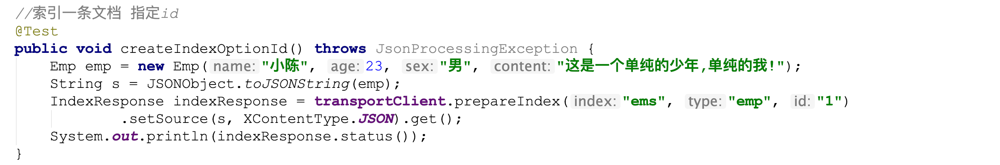
2.自定生成id索引记录¶
//索引一条文档 指定id @Test public void createIndexOptionId() throws JsonProcessingException { Emp emp = new Emp("小白", 23, "男", "这是一个单纯的小白,单纯的我!"); String s = JSONObject.toJSONString(emp); IndexResponse indexResponse = transportClient.prepareIndex("ems", "emp") .setSource(s, XContentType.JSON).get(); System.out.println(indexResponse.status()); }
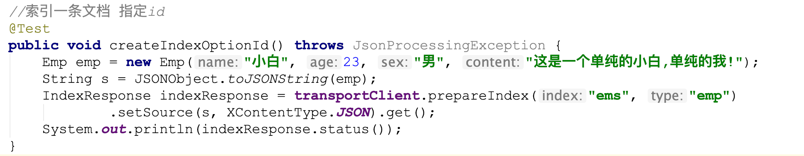
13.3 更新一条索引¶
//更新一条记录 @Test public void testUpdate() throws IOException { Emp emp = new Emp(); emp.setName("明天你好"); String s = JSONObject.toJSONString(emp); UpdateResponse updateResponse = transportClient.prepareUpdate("ems", "emp", "1") .setDoc(s,XContentType.JSON).get(); System.out.println(updateResponse.status()); }
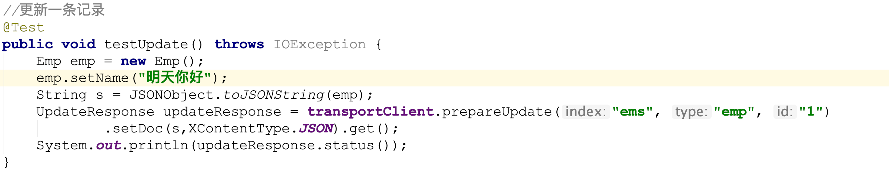
13.4 删除一条索引¶
//删除一条记录 @Test public void testDelete() throws UnknownHostException { DeleteResponse deleteResponse = transportClient.prepareDelete("ems", "emp", "1").get(); System.out.println(deleteResponse.status()); }
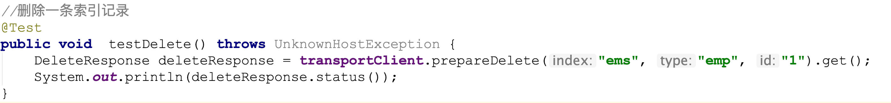
13.5 批量更新¶
//批量更新 @Test public void testBulk() throws IOException { //添加第一条记录 IndexRequest request1 = new IndexRequest("ems","emp","1"); Emp emp = new Emp("中国科技", 23, "男", "这是好人"); request1.source(JSONObject.toJSONString(emp),XContentType.JSON); //添加第二条记录 IndexRequest request2 = new IndexRequest("ems","emp","2"); Emp emp2 = new Emp("中国科技", 23, "男", "这是好人"); request2.source(JSONObject.toJSONString(emp2),XContentType.JSON); //更新记录 UpdateRequest updateRequest = new UpdateRequest("ems","emp","1"); Emp empUpdate = new Emp(); empUpdate.setName("中国力量"); updateRequest.doc(JSONObject.toJSONString(empUpdate),XContentType.JSON); //删除一条记录 DeleteRequest deleteRequest = new DeleteRequest("ems","emp","2"); BulkResponse bulkItemResponses = transportClient.prepareBulk() .add(request1) .add(request2) .add(updateRequest) .add(deleteRequest) .get(); BulkItemResponse[] items = bulkItemResponses.getItems(); for (BulkItemResponse item : items) { System.out.println(item.status()); } }
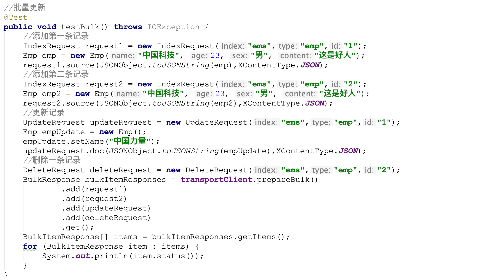
13.6 检索记录¶
1. 查询所有并排序¶
/** * 查询所有并排序 * ASC 升序 DESC 降序 * addSort("age", SortOrder.ASC) 指定排序字段以及使用哪种方式排序 * addSort("age", SortOrder.DESC) 指定排序字段以及使用哪种方式排序 */ @Test public void testMatchAllQuery() throws UnknownHostException { TransportClient transportClient = new PreBuiltTransportClient(Settings.EMPTY).addTransportAddress(new TransportAddress(InetAddress.getByName("172.16.251.142"), 9300)); SearchResponse searchResponse = transportClient.prepareSearch("dangdang").setTypes("book").setQuery(QueryBuilders.matchAllQuery()).addSort("age", SortOrder.DESC).get(); SearchHits hits = searchResponse.getHits(); System.out.println("符合条件的记录数: "+hits.totalHits); for (SearchHit hit : hits) { System.out.print("当前索引的分数: "+hit.getScore()); System.out.print(", 对应结果:=====>"+hit.getSourceAsString()); System.out.println(", 指定字段结果:"+hit.getSourceAsMap().get("name")); System.out.println("================================================="); } }
分页查询¶
/** * 分页查询 * From 从那条记录开始 默认从0 开始 form = (pageNow-1)*size * Size 每次返回多少条符合条件的结果 默认10 */ @Test public void testMatchAllQueryFormAndSize() throws UnknownHostException { TransportClient transportClient = new PreBuiltTransportClient(Settings.EMPTY).addTransportAddress(new TransportAddress(InetAddress.getByName("172.16.251.142"), 9300)); SearchResponse searchResponse = transportClient.prepareSearch("dangdang").setTypes("book").setQuery(QueryBuilders.matchAllQuery()).setFrom(0).setSize(2).get(); SearchHits hits = searchResponse.getHits(); System.out.println("符合条件的记录数: "+hits.totalHits); for (SearchHit hit : hits) { System.out.print("当前索引的分数: "+hit.getScore()); System.out.print(", 对应结果:=====>"+hit.getSourceAsString()); System.out.println(", 指定字段结果:"+hit.getSourceAsMap().get("name")); System.out.println("================================================="); } }
查询返回字段¶
/** * 查询返回指定字段(source) 默认返回所有 * setFetchSource 参数1:包含哪些字段 参数2:排除哪些字段 * setFetchSource("*","age") 返回所有字段中排除age字段 * setFetchSource("name","") 只返回name字段 * setFetchSource(new String[]{},new String[]{}) */ @Test public void testMatchAllQuerySource() throws UnknownHostException { TransportClient transportClient = new PreBuiltTransportClient(Settings.EMPTY).addTransportAddress(new TransportAddress(InetAddress.getByName("172.16.251.142"), 9300)); SearchResponse searchResponse = transportClient.prepareSearch("dangdang").setTypes("book").setQuery(QueryBuilders.matchAllQuery()).setFetchSource("*","age").get(); SearchHits hits = searchResponse.getHits(); System.out.println("符合条件的记录数: "+hits.totalHits); for (SearchHit hit : hits) { System.out.print("当前索引的分数: "+hit.getScore()); System.out.print(", 对应结果:=====>"+hit.getSourceAsString()); System.out.println(", 指定字段结果:"+hit.getSourceAsMap().get("name")); System.out.println("================================================="); } }
term查询¶
/** * term查询 */ @Test public void testTerm() throws UnknownHostException { TransportClient transportClient = new PreBuiltTransportClient(Settings.EMPTY).addTransportAddress(new TransportAddress(InetAddress.getByName("172.16.251.142"), 9300)); TermQueryBuilder queryBuilder = QueryBuilders.termQuery("name","中国"); SearchResponse searchResponse = transportClient.prepareSearch("dangdang").setTypes("book").setQuery(queryBuilder).get(); }
range查询¶
/** * rang查询 * lt 小于 * lte 小于等于 * gt 大于 * gte 大于等于 */ @Test public void testRange() throws UnknownHostException { TransportClient transportClient = new PreBuiltTransportClient(Settings.EMPTY).addTransportAddress(new TransportAddress(InetAddress.getByName("172.16.251.142"), 9300)); RangeQueryBuilder rangeQueryBuilder = QueryBuilders.rangeQuery("age").lt(45).gte(8); SearchResponse searchResponse = transportClient.prepareSearch("dangdang").setTypes("book").setQuery(rangeQueryBuilder).get(); }
prefix查询¶
/** * prefix 前缀查询 * */ @Test public void testPrefix() throws UnknownHostException { TransportClient transportClient = new PreBuiltTransportClient(Settings.EMPTY).addTransportAddress(new TransportAddress(InetAddress.getByName("172.16.251.142"), 9300)); PrefixQueryBuilder prefixQueryBuilder = QueryBuilders.prefixQuery("name", "中"); SearchResponse searchResponse = transportClient.prepareSearch("dangdang").setTypes("book").setQuery(prefixQueryBuilder).get(); }
wildcard查询¶
/** * wildcardQuery 通配符查询 * */ @Test public void testwildcardQuery() throws UnknownHostException { TransportClient transportClient = new PreBuiltTransportClient(Settings.EMPTY).addTransportAddress(new TransportAddress(InetAddress.getByName("172.16.251.142"), 9300)); WildcardQueryBuilder wildcardQueryBuilder = QueryBuilders.wildcardQuery("name", "中*"); SearchResponse searchResponse = transportClient.prepareSearch("dangdang").setTypes("book").setQuery(wildcardQueryBuilder).get(); }
Ids查询¶
/** * ids 查询 */ @Test public void testIds() throws UnknownHostException { TransportClient transportClient = new PreBuiltTransportClient(Settings.EMPTY).addTransportAddress(new TransportAddress(InetAddress.getByName("172.16.251.142"), 9300)); IdsQueryBuilder idsQueryBuilder = QueryBuilders.idsQuery().addIds("1","2"); SearchResponse searchResponse = transportClient.prepareSearch("dangdang").setTypes("book").setQuery(idsQueryBuilder).get(); }
fuzzy模糊查询¶
/** * fuzzy 查询 */ @Test public void testFuzzy() throws UnknownHostException { TransportClient transportClient = new PreBuiltTransportClient(Settings.EMPTY).addTransportAddress(new TransportAddress(InetAddress.getByName("172.16.251.142"), 9300)); FuzzyQueryBuilder fuzzyQueryBuilder = QueryBuilders.fuzzyQuery("content", "国人"); SearchResponse searchResponse = transportClient.prepareSearch("dangdang").setTypes("book").setQuery(fuzzyQueryBuilder).get(); }
bool 查询¶
/** * bool 查询 */ @Test public void testBool() throws UnknownHostException { TransportClient transportClient = new PreBuiltTransportClient(Settings.EMPTY).addTransportAddress(new TransportAddress(InetAddress.getByName("172.16.251.142"), 9300)); BoolQueryBuilder boolQueryBuilder = QueryBuilders.boolQuery(); boolQueryBuilder.should(QueryBuilders.matchAllQuery()); boolQueryBuilder.mustNot(QueryBuilders.rangeQuery("age").lte(8)); boolQueryBuilder.must(QueryBuilders.termQuery("name","中国")); SearchResponse searchResponse = transportClient.prepareSearch("dangdang").setTypes("book").setQuery(boolQueryBuilder).get(); }
高亮查询¶
/** * 高亮查询 * .highlighter(highlightBuilder) 用来指定高亮设置 * requireFieldMatch(false) 开启多个字段高亮 * field 用来定义高亮字段 * preTags("<span style='color:red'>") 用来指定高亮前缀 * postTags("</span>") 用来指定高亮后缀 */ @Test public void testHighlight() throws UnknownHostException { TransportClient transportClient = new PreBuiltTransportClient(Settings.EMPTY).addTransportAddress(new TransportAddress(InetAddress.getByName("172.16.251.142"), 9300)); TermQueryBuilder termQueryBuilder = QueryBuilders.termQuery("name", "中国"); HighlightBuilder highlightBuilder = new HighlightBuilder(); highlightBuilder.requireFieldMatch(false).field("name").field("content").preTags("<span style='color:red'>").postTags("</span>"); SearchResponse searchResponse = transportClient.prepareSearch("dangdang").setTypes("book").highlighter(highlightBuilder).highlighter(highlightBuilder).setQuery(termQueryBuilder).get(); SearchHits hits = searchResponse.getHits(); System.out.println("符合条件的记录数: "+hits.totalHits); for (SearchHit hit : hits) { Map<String, Object> sourceAsMap = hit.getSourceAsMap(); Map<String, HighlightField> highlightFields = hit.getHighlightFields(); System.out.println("================高亮之前=========="); for(Map.Entry<String,Object> entry:sourceAsMap.entrySet()){ System.out.println("key: "+entry.getKey() +" value: "+entry.getValue()); } System.out.println("================高亮之后=========="); for (Map.Entry<String,Object> entry:sourceAsMap.entrySet()){ HighlightField highlightField = highlightFields.get(entry.getKey()); if (highlightField!=null){ System.out.println("key: "+entry.getKey() +" value: "+ highlightField.fragments()[0]); }else{ System.out.println("key: "+entry.getKey() +" value: "+entry.getValue()); } } } }
14. SpringBoot Data操作ES¶
14.1 引入依赖¶
<dependency> <groupId>org.springframework.boot</groupId> <artifactId>spring-boot-starter-data-elasticsearch</artifactId> </dependency>
14.2 编写yml配置¶
- spring-data(2~3.x版本配置)
spring:
data:
elasticsearch:
cluster-nodes: 172.16.251.142:9300
- spring-data(新版本推荐配置) RestHighLevelClient rest客户端 ElasticSearchRespositoy接口
@Configuration public class RestClientConfig extends AbstractElasticsearchConfiguration { @Override @Bean public RestHighLevelClient elasticsearchClient() { final ClientConfiguration clientConfiguration = ClientConfiguration.builder() .connectedTo("192.168.202.200:9200") .build(); return RestClients.create(clientConfiguration).rest(); } }
14.3 编写entity¶
@Document(indexName = "dangdang",type = "book") @Data @AllArgsConstructor @NoArgsConstructor public class Book { @Id private String id; @Field(type = FieldType.Text,analyzer ="ik_max_word") private String name; @Field(type = FieldType.Date) @JsonFormat(pattern="yyyy-MM-dd") private Date createDate; @Field(type = FieldType.Keyword) private String author; @Field(type = FieldType.Text,analyzer ="ik_max_word") private String content; }
@Document: 代表一个文档记录
indexName: 用来指定索引名称
type: 用来指定索引类型
@Id: 用来将对象中id和ES中_id映射
@Field: 用来指定ES中的字段对应Mapping
type: 用来指定ES中存储类型
analyzer: 用来指定使用哪种分词器
14.4 编写BookRepository¶
public interface BookRepository extends ElasticsearchRepository<Book,String> { }
14.5 索引or更新一条记录¶
NOTE:这种方式根据实体类中中配置自动在ES创建索引,类型以及映射
@SpringBootTest(classes = Application.class) @RunWith(SpringRunner.class) public class TestSpringBootDataEs { @Autowired private BookRepository bookRespistory; /** * 添加索引和更新索引 id 存在更新 不存在添加 */ @Test public void testSaveOrUpdate(){ Book book = new Book(); book.setId("21"); book.setName("小陈"); book.setCreateDate(new Date()); book.setAuthor("李白"); book.setContent("这是中国的好人,这真的是一个很好的人,李白很狂"); bookRespistory.save(book); } }
14.6 删除一条记录¶
/** * 删除一条索引 */ @Test public void testDelete(){ Book book = new Book(); book.setId("21"); bookRespistory.delete(book); }
14.7 查询¶
/** * 查询所有 */ @Test public void testFindAll(){ Iterable<Book> books = bookRespistory.findAll(); for (Book book : books) { System.out.println(book); } } /** * 查询一个 */ @Test public void testFindOne(){ Optional<Book> byId = bookRespistory.findById("21"); System.out.println(byId.get()); }
14.8 查询排序¶
/** * 排序查询 */ @Test public void testFindAllOrder(){ Iterable<Book> books = bookRespistory.findAll(Sort.by(Sort.Order.asc("createDate"))); books.forEach(book -> System.out.println(book) ); }
14.9 自定义基本查询¶
| Keyword | Sample | Elasticsearch Query String |
|---|---|---|
And |
findByNameAndPrice |
{"bool" : {"must" : [ {"field" : {"name" : "?"}}, {"field" : {"price" : "?"}} ]}} |
Or |
findByNameOrPrice |
{"bool" : {"should" : [ {"field" : {"name" : "?"}}, {"field" : {"price" : "?"}} ]}} |
Is |
findByName |
{"bool" : {"must" : {"field" : {"name" : "?"}}}} |
Not |
findByNameNot |
{"bool" : {"must_not" : {"field" : {"name" : "?"}}}} |
Between |
findByPriceBetween |
{"bool" : {"must" : {"range" : {"price" : {"from" : ?,"to" : ?,"include_lower" : true,"include_upper" : true}}}}} |
LessThanEqual |
findByPriceLessThan |
{"bool" : {"must" : {"range" : {"price" : {"from" : null,"to" : ?,"include_lower" : true,"include_upper" : true}}}}} |
GreaterThanEqual |
findByPriceGreaterThan |
{"bool" : {"must" : {"range" : {"price" : {"from" : ?,"to" : null,"include_lower" : true,"include_upper" : true}}}}} |
Before |
findByPriceBefore |
{"bool" : {"must" : {"range" : {"price" : {"from" : null,"to" : ?,"include_lower" : true,"include_upper" : true}}}}} |
After |
findByPriceAfter |
{"bool" : {"must" : {"range" : {"price" : {"from" : ?,"to" : null,"include_lower" : true,"include_upper" : true}}}}} |
Like |
findByNameLike |
{"bool" : {"must" : {"field" : {"name" : {"query" : "?*","analyze_wildcard" : true}}}}} |
StartingWith |
findByNameStartingWith |
{"bool" : {"must" : {"field" : {"name" : {"query" : "?*","analyze_wildcard" : true}}}}} |
EndingWith |
findByNameEndingWith |
{"bool" : {"must" : {"field" : {"name" : {"query" : "*?","analyze_wildcard" : true}}}}} |
Contains/Containing |
findByNameContaining |
{"bool" : {"must" : {"field" : {"name" : {"query" : "**?**","analyze_wildcard" : true}}}}} |
In |
findByNameIn(Collection<String>names) |
{"bool" : {"must" : {"bool" : {"should" : [ {"field" : {"name" : "?"}}, {"field" : {"name" : "?"}} ]}}}} |
NotIn |
findByNameNotIn(Collection<String>names) |
{"bool" : {"must_not" : {"bool" : {"should" : {"field" : {"name" : "?"}}}}}} |
Near |
findByStoreNear |
Not Supported Yet ! |
True |
findByAvailableTrue |
{"bool" : {"must" : {"field" : {"available" : true}}}} |
False |
findByAvailableFalse |
{"bool" : {"must" : {"field" : {"available" : false}}}} |
OrderBy |
findByAvailableTrueOrderByNameDesc |
{"sort" : [{ "name" : {"order" : "desc"} }],"bool" : {"must" : {"field" : {"available" : true}}}} |
public interface BookRepository extends ElasticsearchRepository<Book,String> { //根据作者查询 List<Book> findByAuthor(String keyword); //根据内容查询 List<Book> findByContent(String keyword); //根据内容和名字查 List<Book> findByNameAndContent(String name,String content); //根据内容或名称查询 List<Book> findByNameOrContent(String name,String content); //范围查询 List<Book> findByPriceBetween(Double start,Double end); //查询名字以xx开始的 List<Book> findByNameStartingWith(String name); //查询某个字段值是否为false List<Book> findByNameFalse(); //....... }
14.10 实现复杂查询¶
分页查询并排序¶
@Test public void testSearchPage() throws IOException { SearchRequest searchRequest = new SearchRequest(); SearchSourceBuilder sourceBuilder = new SearchSourceBuilder(); sourceBuilder.from(0).size(2).sort("age", SortOrder.DESC).query(QueryBuilders.matchAllQuery()); searchRequest.indices("ems").types("emp").source(sourceBuilder); SearchResponse search = restHighLevelClient.search(searchRequest, RequestOptions.DEFAULT); SearchHit[] hits = search.getHits().getHits(); for (SearchHit hit : hits) { System.out.println(hit.getSourceAsString()); } }
高亮查询¶
@Test public void testSearchHig() throws IOException { SearchRequest searchRequest = new SearchRequest(); SearchSourceBuilder sourceBuilder = new SearchSourceBuilder(); HighlightBuilder highlightBuilder = new HighlightBuilder(); highlightBuilder.field("content").requireFieldMatch(false).preTags("<span style='color:red;'>").postTags("</span>"); sourceBuilder.from(0).size(2).sort("age", SortOrder.DESC).highlighter(highlightBuilder).query(QueryBuilders.termQuery("content","框架")); searchRequest.indices("ems").types("emp").source(sourceBuilder); SearchResponse search = restHighLevelClient.search(searchRequest, RequestOptions.DEFAULT); SearchHit[] hits = search.getHits().getHits(); for (SearchHit hit : hits) { System.out.println(hit.getSourceAsString()); Map<String, HighlightField> highlightFields = hit.getHighlightFields(); highlightFields.forEach((k,v)-> System.out.println("key: "+k + " value: "+v.fragments()[0])); } }
15. ES中集群¶
15.1 相关概念¶
集群(cluster)¶
1.单节点压力问题 并发压力 物理资源上限压力
2.数据冗余备份能力
一个集群就是由一个或多个节点组织在一起，它们共同持有你整个的数据，并一起提供索引和搜索功能。一个集群 由一个唯一的名字标识，这个名字默认就是
elasticsearch。这个名字是重要的，因为一个节点只能通过指定某个集群的名字，来加入这个集群。在产品环境中显式地设定这个名字是一个好习惯，但是使用默认值来进行测试/开发也是不错的。
节点(node)¶
一个节点是你集群中的一个服务器，作为集群的一部分，它存储你的数据，参与集群的索引和搜索功能。和集群类似，一个节点也是由一个名字来标识的，默认情况下，这个名字是一个随机的漫威漫画角色的名字，这个名字会在启动的时候赋予节点。这个名字对于管理工作来说挺重要的，因为在这个管理过程中，你会去确定网络中的哪些服务器对应于Elasticsearch集群中的哪些节点。
一个节点可以通过配置集群名称的方式来加入一个指定的集群。默认情况下，每个节点都会被安排加入到一个叫 做“elasticsearch”的集群中，这意味着，如果你在你的网络中启动了若干个节点，并假定它们能够相互发现彼此，它们将会自动地形成并加入到一个叫做“elasticsearch”的集群中。
在一个集群里，只要你想，可以拥有任意多个节点。而且，如果当前你的网络中没有运行任何Elasticsearch节点， 这时启动一个节点，会默认创建并加入一个叫做“elasticsearch”的集群。
分片和复制(shards & replicas)¶
一个索引可以存储超出单个结点硬件限制的大量数据。比如，一个具有10亿文档的索引占据1TB的磁盘空间，而任一节点都没有这样大的磁盘空间;或者单个节点处理搜索请求，响应太慢。为了解决这个问题，Elasticsearch提供了将索引划分成多份的能力，这些份就叫做分片。当你创建一个索引的时候，你可以指定你想要的分片的数量。每个分片本身也是一个功能完善并且独立的“索引”，这个“索引”可以被放置 到集群中的任何节点上。 分片之所以重要，主要有两方面的原因:
允许你水平分割/扩展你的内容容量允许你在分片(潜在地，位于多个节点上)之上进行分布式的、并行的操作，进而提高性能/吞吐量 至于一个分片怎样分布，它的文档怎样聚合回搜索请求，是完全由Elasticsearch管理的，对于作为用户的你来说，这些都是透明的。
在一个网络/云的环境里，失败随时都可能发生，在某个分片/节点不知怎么的就处于离线状态，或者由于任何原因 消失了。这种情况下，有一个故障转移机制是非常有用并且是强烈推荐的。为此目的，Elasticsearch允许你创建分 片的一份或多份拷贝，这些拷贝叫做复制分片，或者直接叫复制。复制之所以重要，主要有两方面的原因:
在分片/节点失败的情况下，提供了高可用性。因为这个原因，注意到复制分片从不与原/主要 (original/primary)分片置于同一节点上是非常重要的。 扩展你的搜索量/吞吐量，因为搜索可以在所有的复制上并行运行
总之，每个索引可以被分成多个分片。一个索引也可以被复制0次(意思是没有复制)或多次。一旦复制了，每个 索引就有了主分片(作为复制源的原来的分片)和复制分片(主分片的拷贝)之别。分片和复制的数量可以在索引创建的时候指定。在索引创建之后，你可以在任何时候动态地改变复制数量，但是不能改变分片的数量。
默认情况下，
Elasticsearch中的每个索引被分片5个主分片和1个复制，这意味着，如果你的集群中至少有两个节点，你的索引将会有5个主分片和另外5个复制分片(1个完全拷贝)，这样的话每个索引总共就有10个分片。一个 索引的多个分片可以存放在集群中的一台主机上，也可以存放在多台主机上，这取决于你的集群机器数量。主分片和复制分片的具体位置是由ES内在的策略所决定的。
集群架构图¶
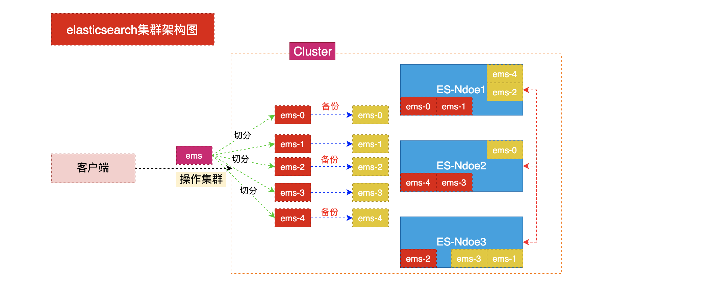
15.2 快速搭建集群¶
1. 将原有ES安装包复制三份
cp -r elasticsearch-6.2.4/ master/
cp -r elasticsearch-6.2.4/ slave1/
cp -r elasticsearch-6.2.4/ slave2/
2. 删除复制目录中data目录
#注意:由于复制目录之前使用过因此需要在创建集群时将原来数据删除
rm -rf master/data
rm -rf slave1/data
rm -rf slave2/data
3. 编辑没有文件夹中config目录中jvm.options文件跳转启动内存
vim master/config/jvm.options
vim slave1/config/jvm.options
vim slave2/config/jvm.options
#分别加入: -Xms512m -Xmx512m
4. 分别修改三个文件夹中config目录中elasticsearch.yml文件
vim master/config/elasticsearch.yml
vim salve1/config/elasticsearch.yml
vim slave2/config/elasticsearch.yml
#分别修改如下配置:
cluster.name: my-es #集群名称(集群名称必须一致)
node.name: es-03 #节点名称(节点名称不能一致)
network.host: 0.0.0.0 #监听地址(必须开启远程权限,并关闭防火墙)
http.port: 9200 #监听端口(在一台机器时服务端口不能一致)
discovery.zen.ping.unicast.hosts: ["172.30.2.175:9301", "172.30.2.201:9302"] #另外两个节点的ip
gateway.recover_after_nodes: 3 #集群可做master的最小节点数
transport.tcp.port: 9300 #集群TCP端口(在一台机器搭建必须修改) 9301 9302 9303
5. 启动多个es
./master/bin/elasticsearch
./slave1/bin/elasticsearch
./slave2/bin/elasticsearch
6. 查看节点状态
curl http://10.102.115.3:9200
curl http://10.102.115.3:8200
curl http://10.102.115.3:7200
7. 查看集群健康
http://10.102.115.3:9200/_cat/health?v
15.3 安装head插件¶
1. 访问github网站
搜索: elasticsearch-head 插件
2. 安装git
yum install git
3. 将elasticsearch-head下载到本地
git clone git://github.com/mobz/elasticsearch-head.git
4. 安装nodejs
#注意: 没有wget的请先安装yum install -y wget
wget http://cdn.npm.taobao.org/dist/node/latest-v8.x/node-v8.1.2-linux-x64.tar.xz
5. 解压缩nodejs
xz -d node-v10.15.3-linux-arm64.tar.xz
tar -xvf node-v10.15.3-linux-arm64.tar
6. 配置环境变量
mv node-v10.15.3-linux-arm64 nodejs
mv nodejs /usr/nodejs
vim /etc/profile
export NODE_HOME=/usr/nodejs
export PATH=$PATH:$JAVA_HOME/bin:$NODE_HOME/bin
source /etc/profile
7. 进入elasticsearch-head的目录
npm config set registry https://registry.npm.taobao.org
npm install
npm run start
8. 编写elastsearch.yml配置文件开启head插件的访问
http.cors.enabled: true
http.cors.allow-origin: "*"
9. 启动访问head插件 默认端口9100
http://ip:9100 查看集群状态